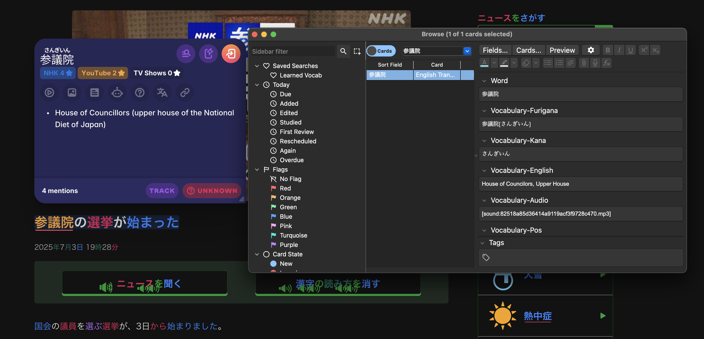

Sentence Mining Within the Core 6K Deck
I’ve worked through about two-thirds of the Core 6k Anki deck so far. At some point, I got bored with it and shifted to sentence mining—mainly picking out new words from content I actually enjoy, like shows, articles, or YouTube videos.
But every now and then, especially while reading the NHK Easy website, I come across words that turn out to be from the unseen part of the Core 6k deck. Even though I haven’t officially studied those cards yet, I end up mining them naturally through immersion.
It’s a good reminder that sentence mining isn’t just for completely new words outside the deck. It can also overlap with words I would have eventually reached in Core6k—just in a way that feels much more alive and relevant.

Tags: japanese, sentence-mining